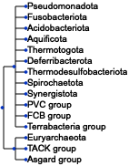
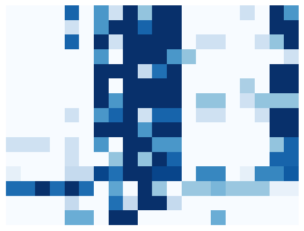

import numpy as np
import pandas as pd
import matplotlib.pyplot as plt
import scipy
import seaborn as sns
import fastcluster
from sklearn.metrics.pairwise import pairwise_distances
import seaborn as sns
import scipy.spatial as sp
import scipy.cluster.hierarchy as hc
from ete3 import NCBITaxa, Tree, ProfileFace, AttrFace, TreeStyle, BarChartFace
ncbi = NCBITaxa()
Plot the NCBI classification tree from file#
Demo = True # Change to False if you want to run the script on the full dataset
# made using orthofinder, NCBI ID's are slightly different to the ones from the strains in EggNOG so that's corrected in the .nw file.
ProkaryoticOrders = Tree("../Data/input/ProkaryotTree.nw", format=9)
ts = TreeStyle()
ts.draw_guiding_lines = True
ts.show_leaf_name = True
ts.scale = 10
ts.show_scale = False
ProkaryoticOrders.swap_children()
order = [1224, 32066, 57723, 200783, 200918, 200930, 200940, 203691,
508458, 1783257, 1783270, 1783272, 28890, 1783275, 1935183]
ProkaryoticOrders.render("%%inline", tree_style=ts, dpi=100)

Load the OG DataFrame#
if Demo == True:
filepath = "../Data/demo/OFOG&eOGCounts.csv"
else:
filepath = "../Data/output/AllOFOG&eOGCounts.csv"
Root_OG_Counts = pd.read_csv(filepath, index_col=0)
Root_OG_Counts.head()
| 1054217 | 1104324 | 1120746 | 1121422 | 1121438 | 1121448 | 1123070 | 1123240 | 1123288 | 1123325 | ... | 880074 | 903814 | 903818 | 907348 | 926567 | 931626 | 933262 | 944546 | Loki 4 | Thor | |
|---|---|---|---|---|---|---|---|---|---|---|---|---|---|---|---|---|---|---|---|---|---|
| COG | |||||||||||||||||||||
| 28IG4 | 0.0 | 0.0 | 0.0 | 0.0 | 0.0 | 0.0 | 0.0 | 0.0 | 0.0 | 0.0 | ... | 0.0 | 0.0 | 0.0 | 0.0 | 0.0 | 0.0 | 0.0 | 0.0 | 0 | 0 |
| 28K0K | 0.0 | 0.0 | 0.0 | 0.0 | 0.0 | 0.0 | 0.0 | 0.0 | 0.0 | 0.0 | ... | 0.0 | 0.0 | 0.0 | 0.0 | 0.0 | 0.0 | 0.0 | 0.0 | 0 | 0 |
| 28QBX | 0.0 | 0.0 | 0.0 | 0.0 | 0.0 | 0.0 | 0.0 | 0.0 | 0.0 | 0.0 | ... | 0.0 | 0.0 | 0.0 | 0.0 | 0.0 | 0.0 | 0.0 | 0.0 | 0 | 0 |
| 28TET | 0.0 | 0.0 | 0.0 | 0.0 | 0.0 | 0.0 | 0.0 | 0.0 | 0.0 | 0.0 | ... | 0.0 | 0.0 | 0.0 | 0.0 | 0.0 | 0.0 | 0.0 | 0.0 | 0 | 0 |
| 28WHW | 0.0 | 0.0 | 0.0 | 0.0 | 0.0 | 0.0 | 0.0 | 0.0 | 0.0 | 0.0 | ... | 0.0 | 0.0 | 0.0 | 0.0 | 0.0 | 0.0 | 0.0 | 0.0 | 0 | 0 |
5 rows × 117 columns
Open the list of clusters of orthologous groups of interest#
COGsOI = pd.read_csv("../Data/input/AllWLPGenes.csv", sep=";", comment="#",
header=0).loc[:, ["Category", "Group", "GeneName", "COG"]]
COGsOI
| Category | Group | GeneName | COG | |
|---|---|---|---|---|
| 0 | Metabolic | MFR | fmdC | COG2218 |
| 1 | Metabolic | THMPT | ftr | COG2037 |
| 2 | Metabolic | THMPT | mch | COG3252 |
| 3 | Metabolic | THMPT | mtd | COG1927 |
| 4 | Metabolic | THMPT | mer | COG2141 |
| 5 | Metabolic | THMPT | mtrH | COG1962 |
| 6 | Metabolic | THF | fdhA | COG3383 |
| 7 | Metabolic | THF | fhs | COG2759 |
| 8 | Metabolic | THF | folD | COG0190 |
| 9 | Metabolic | THF | mtdA | COG0373 |
| 10 | Metabolic | THF | metF | COG0685 |
| 11 | Metabolic | THF | AcsE | COG1410 |
| 12 | Metabolic | Codh | CdhB | COG1880 |
| 13 | Metabolic | Codh | CdhD/AcsD | COG2069 |
| 14 | Metabolic | Codh | CdhE/AcsC | COG1456 |
| 15 | Metabolic | Codh | CooS/AcsA | COG1151 |
| 16 | Metabolic | Codh | CdhA | COG1152 |
| 17 | Metabolic | Codh | Cdhc | COG1614 |
| 18 | Metabolic | Actt | pta | COG0280 |
| 19 | Metabolic | Actt | ackA | COG0282 |
Root_COGsOI_Counts = Root_OG_Counts.loc[COGsOI.COG]
Root_COGsOI_Counts
| 1054217 | 1104324 | 1120746 | 1121422 | 1121438 | 1121448 | 1123070 | 1123240 | 1123288 | 1123325 | ... | 880074 | 903814 | 903818 | 907348 | 926567 | 931626 | 933262 | 944546 | Loki 4 | Thor | |
|---|---|---|---|---|---|---|---|---|---|---|---|---|---|---|---|---|---|---|---|---|---|
| COG | |||||||||||||||||||||
| COG2218 | 0.0 | 0.0 | 0.0 | 0.0 | 0.0 | 0.0 | 0.0 | 0.0 | 0.0 | 0.0 | ... | 0.0 | 0.0 | 0.0 | 0.0 | 0.0 | 1.0 | 0.0 | 0.0 | 0 | 0 |
| COG2037 | 0.0 | 0.0 | 0.0 | 0.0 | 0.0 | 0.0 | 0.0 | 0.0 | 0.0 | 0.0 | ... | 0.0 | 0.0 | 0.0 | 0.0 | 0.0 | 0.0 | 0.0 | 0.0 | 0 | 0 |
| COG3252 | 0.0 | 0.0 | 0.0 | 0.0 | 0.0 | 0.0 | 0.0 | 0.0 | 0.0 | 0.0 | ... | 0.0 | 0.0 | 0.0 | 0.0 | 0.0 | 0.0 | 0.0 | 0.0 | 0 | 0 |
| COG1927 | 0.0 | 0.0 | 0.0 | 0.0 | 0.0 | 0.0 | 0.0 | 0.0 | 0.0 | 0.0 | ... | 0.0 | 0.0 | 0.0 | 0.0 | 0.0 | 0.0 | 0.0 | 0.0 | 0 | 0 |
| COG2141 | 0.0 | 0.0 | 0.0 | 0.0 | 0.0 | 0.0 | 0.0 | 3.0 | 0.0 | 0.0 | ... | 0.0 | 0.0 | 0.0 | 0.0 | 0.0 | 0.0 | 0.0 | 2.0 | 0 | 6 |
| COG1962 | 0.0 | 0.0 | 0.0 | 1.0 | 0.0 | 0.0 | 0.0 | 0.0 | 1.0 | 0.0 | ... | 0.0 | 0.0 | 0.0 | 0.0 | 0.0 | 1.0 | 0.0 | 0.0 | 0 | 2 |
| COG3383 | 0.0 | 0.0 | 4.0 | 11.0 | 4.0 | 3.0 | 1.0 | 0.0 | 8.0 | 0.0 | ... | 0.0 | 4.0 | 7.0 | 0.0 | 4.0 | 8.0 | 2.0 | 2.0 | 0 | 0 |
| COG2759 | 2.0 | 1.0 | 1.0 | 1.0 | 0.0 | 0.0 | 0.0 | 1.0 | 2.0 | 0.0 | ... | 0.0 | 1.0 | 1.0 | 1.0 | 1.0 | 2.0 | 1.0 | 0.0 | 1 | 1 |
| COG0190 | 0.0 | 0.0 | 1.0 | 1.0 | 1.0 | 1.0 | 1.0 | 1.0 | 1.0 | 1.0 | ... | 1.0 | 1.0 | 1.0 | 1.0 | 1.0 | 1.0 | 1.0 | 1.0 | 1 | 1 |
| COG0373 | 1.0 | 2.0 | 0.0 | 2.0 | 1.0 | 1.0 | 1.0 | 0.0 | 2.0 | 1.0 | ... | 0.0 | 1.0 | 1.0 | 1.0 | 1.0 | 1.0 | 1.0 | 1.0 | 0 | 0 |
| COG0685 | 0.0 | 1.0 | 1.0 | 1.0 | 2.0 | 1.0 | 1.0 | 1.0 | 3.0 | 1.0 | ... | 1.0 | 2.0 | 3.0 | 1.0 | 1.0 | 1.0 | 2.0 | 1.0 | 0 | 0 |
| COG1410 | 0.0 | 0.0 | 2.0 | 4.0 | 1.0 | 1.0 | 1.0 | 1.0 | 9.0 | 1.0 | ... | 1.0 | 12.0 | 3.0 | 1.0 | 1.0 | 15.0 | 3.0 | 1.0 | 0 | 0 |
| COG1880 | 0.0 | 0.0 | 0.0 | 0.0 | 0.0 | 0.0 | 0.0 | 0.0 | 0.0 | 0.0 | ... | 0.0 | 0.0 | 0.0 | 0.0 | 0.0 | 0.0 | 0.0 | 0.0 | 0 | 0 |
| COG2069 | 0.0 | 0.0 | 0.0 | 1.0 | 0.0 | 0.0 | 0.0 | 0.0 | 1.0 | 0.0 | ... | 0.0 | 1.0 | 1.0 | 0.0 | 0.0 | 1.0 | 1.0 | 0.0 | 0 | 0 |
| COG1456 | 0.0 | 0.0 | 0.0 | 3.0 | 0.0 | 0.0 | 0.0 | 0.0 | 1.0 | 0.0 | ... | 0.0 | 3.0 | 1.0 | 0.0 | 0.0 | 1.0 | 4.0 | 0.0 | 3 | 0 |
| COG1151 | 0.0 | 0.0 | 0.0 | 0.0 | 0.0 | 0.0 | 0.0 | 0.0 | 0.0 | 0.0 | ... | 0.0 | 0.0 | 0.0 | 0.0 | 0.0 | 0.0 | 0.0 | 0.0 | 0 | 0 |
| COG1152 | 0.0 | 0.0 | 0.0 | 0.0 | 2.0 | 0.0 | 0.0 | 0.0 | 0.0 | 0.0 | ... | 0.0 | 0.0 | 0.0 | 0.0 | 0.0 | 0.0 | 0.0 | 0.0 | 0 | 0 |
| COG1614 | 0.0 | 0.0 | 0.0 | 4.0 | 0.0 | 0.0 | 0.0 | 0.0 | 3.0 | 0.0 | ... | 0.0 | 1.0 | 1.0 | 0.0 | 0.0 | 2.0 | 1.0 | 0.0 | 0 | 0 |
| COG0280 | 0.0 | 0.0 | 1.0 | 0.0 | 0.0 | 1.0 | 2.0 | 1.0 | 1.0 | 0.0 | ... | 2.0 | 2.0 | 2.0 | 1.0 | 2.0 | 1.0 | 0.0 | 1.0 | 0 | 0 |
| COG0282 | 0.0 | 0.0 | 1.0 | 0.0 | 0.0 | 1.0 | 1.0 | 0.0 | 1.0 | 0.0 | ... | 1.0 | 1.0 | 2.0 | 1.0 | 1.0 | 1.0 | 0.0 | 3.0 | 0 | 0 |
20 rows × 117 columns
By Genus#
Taxonomy = pd.DataFrame(index=Root_COGsOI_Counts.columns)
Taxonomy["Kingdom"] = "NaN"
Taxonomy["Order"] = "NaN"
for ID in Taxonomy.index:
if ID.isnumeric():
Taxonomy.Kingdom[ID] = ncbi.get_lineage(ID)[2]
Taxonomy.Order[ID] = ncbi.get_lineage(ID)[3]
else:
Taxonomy.Kingdom[ID] = 2157
Taxonomy.Order[ID] = 1935183
# Drop incertae sedis orders and count species per order
SpeciesCount = pd.DataFrame(
Taxonomy[~Taxonomy.Order.isin([2323, 49928])]).groupby("Order").size()
SpeciesCount
/Users/phivri/Applications/mambaforge/envs/PhyloETE/lib/python3.9/site-packages/ete3/ncbi_taxonomy/ncbiquery.py:243: UserWarning: taxid 1313265 was translated into 1302351
warnings.warn("taxid %s was translated into %s" %(taxid, merged_conversion[taxid]))
Order
1224 5
28890 13
29547 5
32066 5
40117 4
57723 5
68297 2
200783 5
200918 4
200930 3
200938 2
200940 5
203691 5
508458 5
1783257 5
1783270 5
1783272 12
1783275 4
1802340 1
1930617 1
1935183 2
2138240 2
2283796 4
2498710 1
2818505 5
3018035 3
dtype: int64
Group counts per order and convert to percentage presence#
RootOGs = Root_COGsOI_Counts > 0
data = RootOGs.T.merge(Taxonomy, how="left", left_index=True,
right_index=True).drop(columns="Kingdom")
# Group by Taxonomic order
data = data.groupby(data.iloc[:, -1]).sum()
# Convert to a percentage of species for each order
data = data.divide(SpeciesCount, axis=0).loc[order]
data.head()
/var/folders/qr/vm827mh53sd6708z2k3_tnnrz3fj08/T/ipykernel_25270/2485214314.py:6: FutureWarning: The default value of numeric_only in DataFrameGroupBy.sum is deprecated. In a future version, numeric_only will default to False. Either specify numeric_only or select only columns which should be valid for the function.
data = data.groupby(data.iloc[:,-1]).sum()
| COG2218 | COG2037 | COG3252 | COG1927 | COG2141 | COG1962 | COG3383 | COG2759 | COG0190 | COG0373 | COG0685 | COG1410 | COG1880 | COG2069 | COG1456 | COG1151 | COG1152 | COG1614 | COG0280 | COG0282 | |
|---|---|---|---|---|---|---|---|---|---|---|---|---|---|---|---|---|---|---|---|---|
| Order | ||||||||||||||||||||
| 1224 | 0.0 | 0.0 | 0.0 | 0.0 | 0.8 | 0.0 | 0.6 | 0.2 | 1.0 | 0.40 | 1.00 | 1.0 | 0.0 | 0.0 | 0.0 | 0.0 | 0.2 | 0.0 | 1.0 | 0.6 |
| 32066 | 0.0 | 0.0 | 0.0 | 0.0 | 0.2 | 0.0 | 0.6 | 1.0 | 1.0 | 0.80 | 1.00 | 1.0 | 0.0 | 0.0 | 0.0 | 0.0 | 0.0 | 0.0 | 1.0 | 1.0 |
| 57723 | 0.0 | 0.0 | 0.0 | 0.0 | 0.8 | 0.0 | 1.0 | 0.2 | 1.0 | 1.00 | 1.00 | 1.0 | 0.0 | 0.2 | 0.2 | 0.0 | 0.0 | 0.2 | 0.4 | 1.0 |
| 200783 | 0.0 | 0.0 | 0.0 | 0.0 | 0.0 | 0.0 | 0.6 | 0.0 | 1.0 | 1.00 | 1.00 | 0.6 | 0.4 | 0.0 | 0.0 | 0.0 | 0.0 | 0.0 | 0.0 | 0.2 |
| 200918 | 0.0 | 0.0 | 0.0 | 0.0 | 0.0 | 0.0 | 1.0 | 1.0 | 1.0 | 0.25 | 0.75 | 1.0 | 0.0 | 0.0 | 0.0 | 0.0 | 0.0 | 0.0 | 1.0 | 1.0 |
plt.imshow(data[COGsOI.COG], cmap='Blues', interpolation='nearest')
#plt.savefig("../Figures/SpeciesCountHeatmap.png", dpi=300)
plt.tick_params(left=False, bottom=False)
plt.axis('off')
plt.show()
